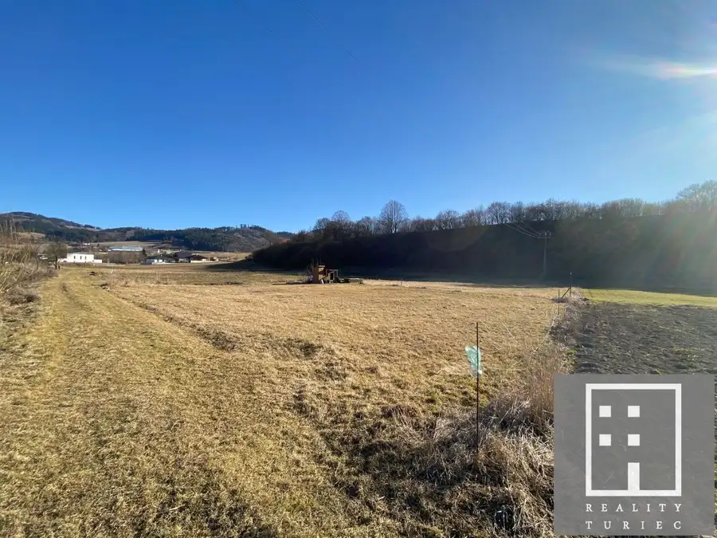
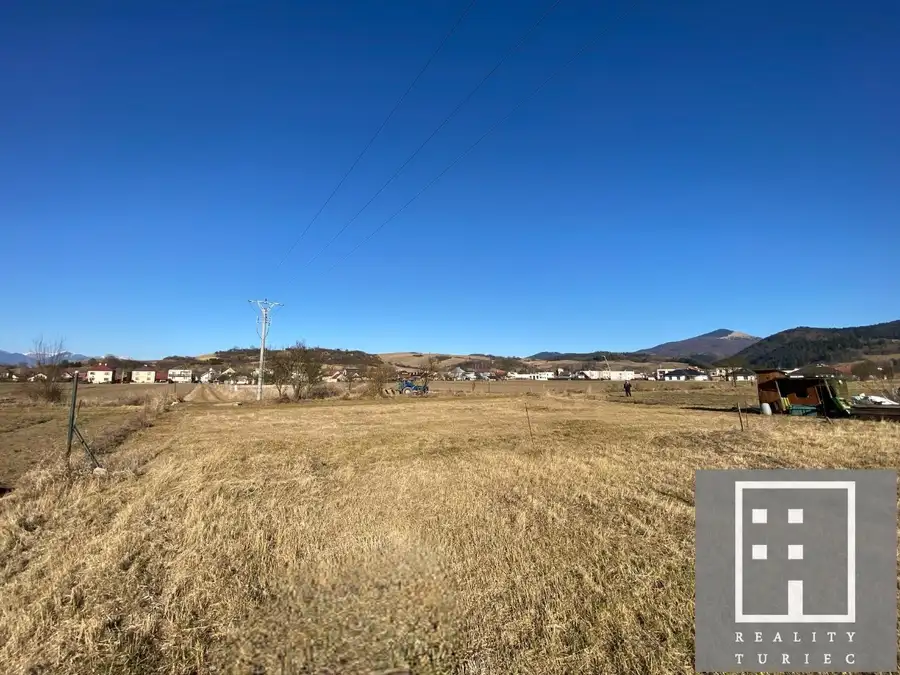
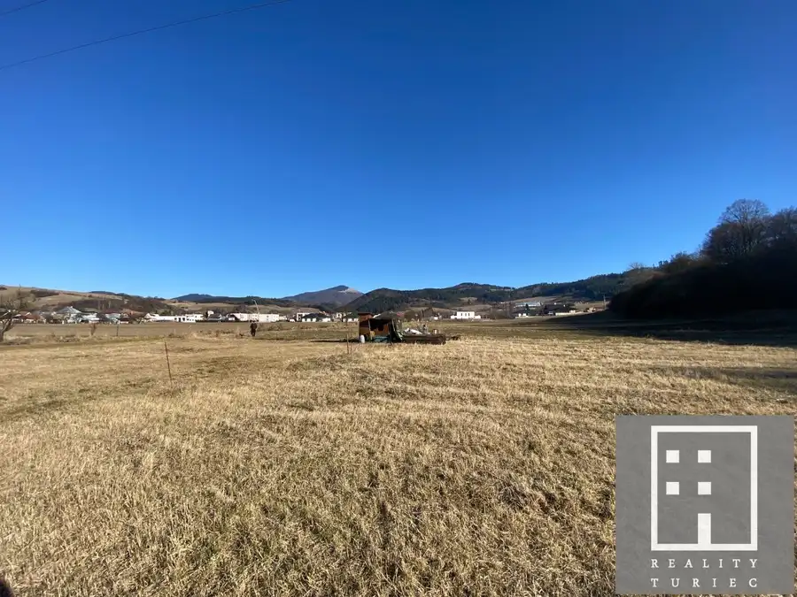
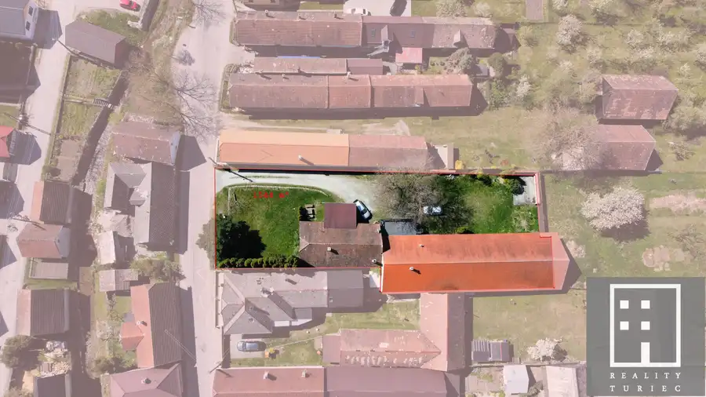
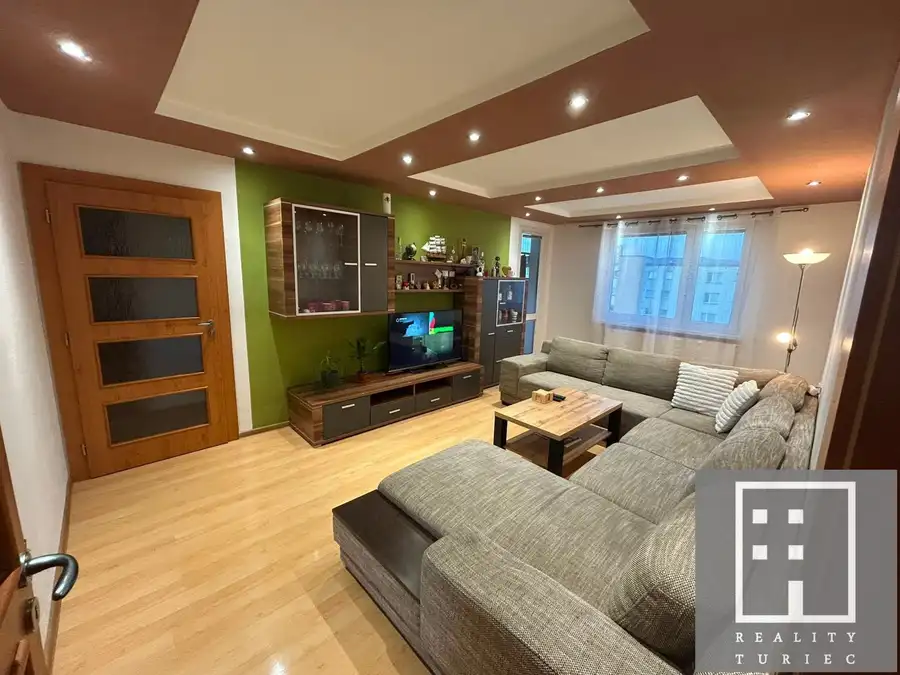
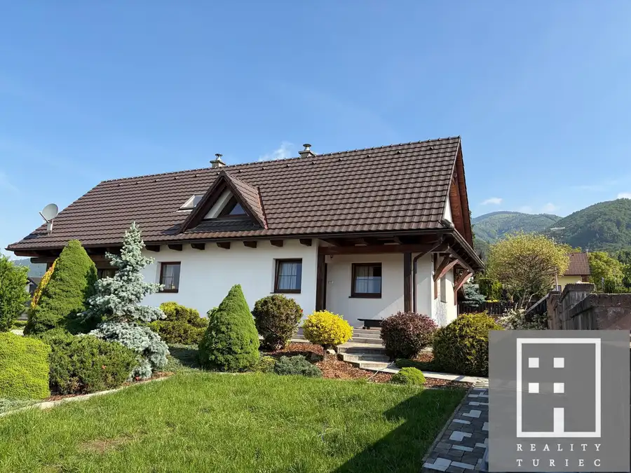

Predaj stavebného pozemku v obci Belá-Dulice pri Martine
Belá-Dulice



- Plocha933 m²
- VlastníctvoOsobné
O nehnuteľnosti
Ideálny pozemok pre výstavbu vášho nového domovaRozloha a lokalitaReality Turiec v zastúpení majiteľa ponúka na predaj pozemok na novo vzniknutej ulici v obci Belá-Dulice pri meste Martine. Rozloha pozemku je 933 m² /29x32 m/, rovinatý terén poskytuje ideálne podmienky na výstavbu rodinného domu. Podiel v ceste je 31 m2.Inžinierske sietePozemok má elektrickú prípojku priamo pri hranici. Voda a kanalizácia sú momentálne v procese riešenia /súhlasné stanoviská od dodávateľov sú k dipozícii/, čo umožní napojenie v blízkej budúcnosti. UPI je k dispozícii v RK.Prístupová cestaPrístupová cesta je spoluvlastníctve majiteľa v 1/6-tineOkolie a lokalitaObec Belá-Dulice je od mesta Martin vzdialená 10 km, malebná dedina pod úpätím Veľkej Fatry pod vyústením Belianskej a Jasenskej doliny, východiskové miesto pre prechádzky, turistiku, lyžovanie a cykloturistiku. V obci je škola, škôlka, pošta, zdravotné stredisko, obchod, autobusová doprava.KontaktPre viac informácií alebo dohodnutie obhliadky nás neváhajte kontaktovať. Táto jedinečná ponuka nehnuteľnosti v obci Belá-Dulice je pripravená na nového majiteľa, ktorý ocení pokojnú lokalitu, krásne výhľady a dobrú dostupnosť do mesta.Cena zahŕňa náklady spojené s predajom nehnuteľnosti, právny servis a poradenstvo, vypracovanie zmlúv, prevod nehnuteľnosti na nového majiteľa, bezplatné poskytnutie finančného poradenstva v spojení s kúpou nehnuteľností. Reality TuriecIng. Eva Korimová ekorimova@reality-turiec.sk +421 915 800 101 www.reality-turiec.sk
Parametre
- Druh
- Pozemok pre rodinné domy
- Dátum zverejnenia
- 12. 03. 2025
- Dĺžka pozemku
- 32
- Elektrina
- Pri pozemku
- Funkčné využitie
- Výstavba rodinného domu
- Odpadové vody
- Nedostupné
- Plocha pozemku
- 933 m²
- Plyn
- Nedostupné
- Pripravenosť k výstavbe
- Schválené v územnom pláne
- Terén pozemku
- Rovinatý
- Typ
- Predaj
- Vlastníctvo
- Osobné
- Voda
- Nedostupné
- Šírka pozemku
- 29
Kde to je


Mohlo by Vás zaujímať

DomNové Cena na vyžádáníDom s dušou, ktorý si pretvoríte na vysnívané rodinné bývanie v štýle anglického vidieka Belá-Dulice 400 m²
BytNové Cena na vyžádání4-izbový byt typu Bauring s loggiou | Martin – Košúty 2 Martin 4-izbový85 m²8. podlažie
DomRezervované 329 900 €Novostavba rodinného domu v rustikálnom štýle s krásnou záhradou Martin-Turčianske Kľačany Turčianske Kľačany 154 m²